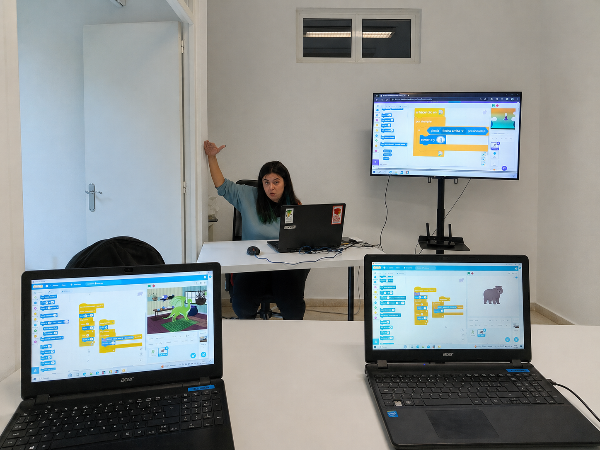
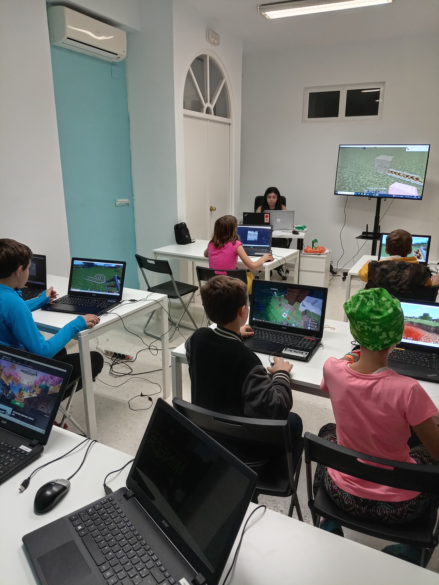
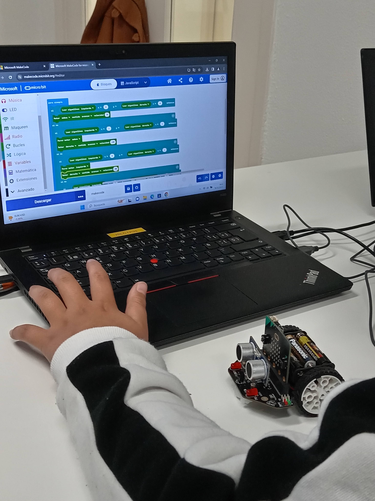

Introducción
Esta guía nace como fruto de nuestra experiencia formando a profesorado y docentes de distintos centros educativos. Ofrecemos una recopilación de recursos, plataformas y actividades para fomentar el pensamiento crítico y computacional, diseñadas para que podáis integrarlas fácilmente en vuestro contexto educativo.
A lo largo de la guía encontraréis herramientas orientadas a diferentes edades y niveles, desde la iniciación al pensamiento computacional en infantil, hasta la creación de videojuegos, diseño 3D, robótica o introducción a la inteligencia artificial. Todas ellas comparten un enfoque común:
- Aprender haciendo (learning by doing)
- Fomentar la creatividad y la experimentación
- Desarrollar el pensamiento crítico y computacional
- Convertir al alumnado en creador, no solo en consumidor de tecnología.
Herramientas Metodológicas
Pair Programming
Programación por parejas. Dos alumnos por ordenador utilizando juego de roles:
- Conductor: El único que puede tocar teclado y ratón. Debe actuar en consenso.
- Copiloto: Se encarga de pensar la mejor manera de resolver retos y depurar errores.
Regla de oro: No somos mandones. Usamos palabras respetuosas como "Creo que...", "En mi opinión...".
Actividades Desconectadas
También llamadas actividades "Unplugged". Son juegos de lógica, cartas, uso de cuerdas y movimientos físicos diseñados para representar y comprender conceptos informáticos (como algoritmos, bucles o transmisión de datos) sin necesidad de usar pantallas ni ordenadores.
01. Scratch
Programación creativa y pensamiento crítico. A través de bloques de colores, los alumnos pueden crear animaciones, historias interactivas y juegos sin necesidad de saber código tradicional.

Temario y Proyectos
Conceptos de Programación
- Algoritmos y depuración (Debugging)
- Tipos de datos, variables y listas
- Sensores y datos de entrada
- Control de flujo (Bucles, Condicionales)
- Operadores (Aritméticos, lógicos)
Diseño de Videojuegos
- Animaciones, objetos, sprites y disfraces
- Sonidos y diálogos
- Movimiento, coordenadas 2D y colisiones
- Marcadores y temporizadores
- Cambios de pantalla (Menús, Game Over)
Plantillas de Proyectos Destacados
Guías y Documentación
Recursos para profes
Documento de recursos prácticos y consejos para educadores y profesores.
Abrir documentoGuía docente 3.0
Guía completa paso a paso sobre el entorno y sus herramientas principales.
Abrir guíaActividades AACC
Memoria de actividades específicas para trabajar con alumnado de Altas Capacidades.
Abrir memoriaTarjetas de Harvard
Guía oficial de Creative Computing con tarjetas de actividades de Scratch.
Descargar PDFTalleres Temáticos HILCODE
Realidad Aumentada
Oracle 4 Girls
Scratch contra el Covid
Taller interactivo
Ver recursos
Super Code Girl
Oracle 4 Girls
Ver recursos
Trabajar la IA a través de bloques
Actividades para entender cómo funciona la inteligencia artificial: cómo reconoce imágenes, toma decisiones y cómo influyen los datos en el comportamiento tecnológico.
1. Detección facial
Scratch & IA
Juegos controlados con la cara. Comprueba que la IA no siempre acierta (falsos positivos/negativos).
Abrir tutorial2. Muévete con IA
Code.org
Diseña un bailarín y crea una coreografía con indicaciones lógicas de inteligencia artificial.
Abrir tutorial3. Fiesta de baile
Edición IA
Aprende conceptos básicos de IA mientras programas una fiesta interactiva.
Abrir tutorial4. Lab. de música
Jam Session
Remezcla canciones y descubre cómo la IA ayuda a generar y sugerir patrones musicales.
Abrir herramienta5. Para pensar
La IA es divertida
Entrena una IA para reconocer posturas con la cámara y reflexiona sobre los datos de origen.
Abrir tutorial02. Minecraft
Minecraft es un entorno donde los alumnos pueden experimentar con lógica, diseño y pensamiento computacional. Utilizamos Minecraft Education Edition para trabajar electrónica digital y circuitos lógicos visuales.

Temario: Electrónica y Redstone
Ver temario completo (12 Sesiones)
1. Fundamentos del Redstone y la electrónica real
- Diferencia entre electricidad y electrónica
- Señales: Digitales y analógicas
- Componentes de un circuito: Entradas y salidas
- Estados de las señales digitales (1/0 – On/Off)
- Conductores, aislantes y potencia
- Redstone: Actualización, Tics y pulsos
2. Uso de las puertas lógicas
- Conceptos, Tablas de verdad y Circuitos lógicos
- Puertas lógicas: NOT, OR, AND, XOR
- Puertas negadas: NOR, NAND y XNOR
3. Código binario y Memoria de las máquinas
- El lenguaje de las máquinas y código binario
- Sistemas de memoria (Circuitos RS, Flip-Flops)
4. Introducción a la domótica
Creación de casas inteligentes y sistemas automáticos para afianzar todo lo aprendido durante las sesiones.
Retos Prácticos
- 🎢 Montaña rusa (E/S)
- 🔦 Iluminación (Puerta XOR)
- 🔢 Mis números en binario
- 🚪 Cerrando la guarida
- 🕹️ Videojuegos 8 bits
- 🏠 La casa automática
Videos - Minecraft Live 2020
Las sesiones prácticas impartidas en directo para acompañar la guía de electrónica digital.
IA en Minecraft Education
Misiones guiadas donde los alumnos colaboran con asistentes de IA dentro del juego.
1. Hora de la IA
La primera noche
2. Fantastic Fairgrounds
Parque temático
3. Generación IA
IA Responsable
4. IA para el bien
Incendios forestales
5. Reed Smart
Detective de IA
6. CyberSafe AI
Profundiza
03. Tinkercad

Diseño 3D simplificado y Simulación
Plataforma online gratuita que permite a jóvenes iniciarse en el diseño 3D de forma sencilla y visual. Basada en figuras geométricas, pueden crear desde objetos simples hasta modelos para impresión 3D, así como simular de forma interactiva circuitos con Arduino y programación de hardware.
* Solo necesitan crear una cuenta de estudiante gratuita.
04. MakeCode Arcade
Crea tus propios videojuegos retro
Plataforma online de Microsoft para programar videojuegos tipo arcade de 8 bits. Diseña personajes, niveles, lógica de juego ¡y juega a tus propias creaciones con bloques, JavaScript o Python!

05. Roblox Studio

Crea juegos 3D y aprende a programar
Permite a los jóvenes crear sus propios videojuegos 3D interactivos utilizando programación con el lenguaje Lua, pasando de jugadores a creadores. Requiere descarga e instalación del software de edición Studio.
Videotutoriales del Curso (Roblox)
06. Placas y Circuitos

Micro:bit
Pequeña placa programable para aprender programación, electrónica y sensores de forma práctica. Cuenta con matriz de luces LED, botones y conexión Bluetooth para crear brújulas, alarmas o termómetros.
Makey Makey
Convierte cualquier objeto conductor (como frutas, plastilina o grafito) en un botón o tecla. Fantástico para introducir conceptos básicos de electrónica de forma lúdica.
Explorar todos los retos y links
Proyecto Destacado: Guitar Hero
Construcción física Plantilla Scratch (vacía) Proyecto Scratch simplificadoMás Experimentos Oficiales
Intro: Banana Bongos App Alarma (Cadena humana) Guía Reto Alarma ¿Qué materiales son conductores? Encender un LED App Piano Interactivo Circuito con lápiz Botones de concurso Explorar base oficial de ideas08. Bee-Bot


Iniciación al pensamiento lógico (4-6 años)
Robot educativo con forma de abeja. Ideal para trabajar secuenciación, resolución de problemas, orientación espacial y ensayo/error de forma manipulativa y sin pantallas.
1. Primeros pasos
Programar recorridos simples (ir de un punto a otro) sobre una cuadrícula.
Actividad guiada2. Encuentra el tesoro
Llegar al objetivo evitando obstáculos o buscando el camino más corto.
Actividad práctica3. Historias con Bee-Bot
Crear escenarios y contar historias en cada desplazamiento.
Actividad creativa4. Matemáticas
Usar números en la cuadrícula para resolver sumas, restas y secuencias.
Lógica matemática5. Retos de lógica
Planificar la secuencia obligando a pasar por ciertos puntos antes del destino.
Desafíos lógicosOpciones Digitales
Si no dispones del robot físico, puedes usar los simuladores (Busca "Bee-Bot App" en tu tienda móvil o abre el entorno web en PC).
Blue-Bot Online